Plan your next adventure across America's 63 national parks. From the rocky Atlantic coastline of Acadia and the misty ridges of the Great Smoky Mountains to the red rock canyons of Utah, the glaciers of Alaska, and the tropical reefs of the U.S. Virgin Islands and American Samoa, these itineraries are organized by region to help you combine nearby parks, make the most of your time, and discover the landscapes, wildlife, and history that make each park unique.


-400.jpg)


National Parks by Region
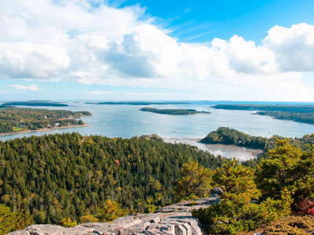
heipei from Deutschland, CC BY-SA 2.0, via Wikimedia Commons; Image Size Adjusted
Acadia National Park 3 Day Itinerary
★Maine
Granite cliffs, forested summits, glacial lakes, and carriage roads define Acadia. This three-day plan explores Mount Desert Island's peaks, coastline, ponds, and villages with minimal driving.
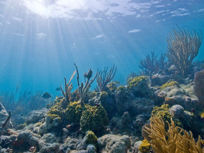
National Park Service, Public domain, via Wikimedia Commons; Image Size Adjusted
Biscayne National Park 1 Day Itinerary
★Florida
Biscayne is 95 percent water: mangrove shorelines, seagrass flats, and the northern Florida Reef. This one-day plan pairs a bay walk and mangrove paddle with a boat trip to a historic island lighthouse.

Congaree National Park 1 Day Itinerary
★South Carolina
Congaree protects the Southeast's largest old-growth bottomland forest, with a canopy over 150 feet tall. This one-day plan combines the famous boardwalk, an oxbow lake hike, and a paddle on Cedar Creek.

RuggyBearLA, CC BY 2.0, via Wikimedia Commons; Image Size Adjusted
Dry Tortugas National Park 1 Day Itinerary
★Florida
Dry Tortugas, 70 miles west of Key West, is anchored by massive Fort Jefferson. This one-day plan follows the ferry day trip to Garden Key for fort exploring, beaches, and some of the best snorkeling.
Everglades National Park 2 Day Itinerary
★Florida
Sawgrass prairies, mangroves, and hardwood hammocks make the Everglades a wildlife haven. This two-day plan covers the park's best routes for alligators, birds, and photography with efficient driving.
New River Gorge National Park 1 Day Itinerary
★West Virginia
The 3,030-foot New River Gorge Bridge crowns a deep Appalachian canyon of sandstone cliffs and rapids. This one-day plan centers on the Canyon Rim area, with the bridge, visitor center, and top hikes.
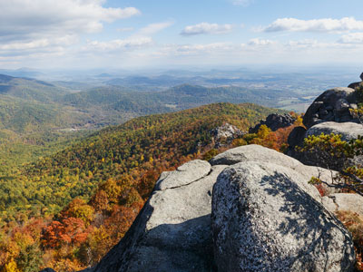
Shenandoah National Park from Virginia, Public domain, via Wikimedia Commons; Image Size Adjusted
Shenandoah National Park 2 Day Itinerary
★Virginia
Skyline Drive links Shenandoah's ridgelines, waterfalls, and sweeping Blue Ridge overlooks. This two-day plan balances signature hikes with panoramic viewpoints, leaving time to enjoy the scenery.
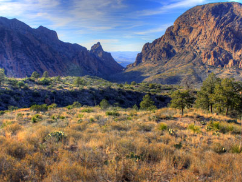
Yinan Chen, Public Domain, via Wikimedia Commons; Image Size Adjusted
Big Bend National Park 3 Day Itinerary
★Texas
Big Bend pairs desert mountains, Rio Grande canyons, historic ranches, and dark night skies. This three-day plan groups stops by region to showcase the park's mountain, desert, and river landscapes.

Great Smoky Mountains National Park 4 Day Itinerary
★Tennessee
Misty ridges, waterfalls, and Southern Appalachian heritage fill America's most visited national park. This four-day plan covers scenic roads, overlooks, summits, and cultural sites with minimal driving.
Guadalupe Mountains National Park 3 Day Itinerary
★Texas
Guadalupe Mountains protects the largest exposed fossil reef and Texas's four highest peaks. This three-day plan links canyons, historic sites, and classic trails across the desert mountains.

Hot Springs National Park 1 Day Itinerary
★Arkansas
Hot Springs is the oldest park area in the National Park System, with grand Gilded Age bathhouses on Bathhouse Row. This one-day plan walks the springs and bathhouses, then climbs to the mountain tower.

National Park Service, Public domain, via Wikimedia Commons; Image Size Adjusted
Mammoth Cave National Park 1 Day Itinerary
★Kentucky
Mammoth Cave is the world's longest known cave system, with over 420 miles surveyed. This one-day plan pairs two ranger-led cave tours with a short surface walk and a ride on the Green River Ferry.
Great Smoky Mountains Blue Ridge Parkway And Shenandoah National Park 6 Day Itinerary
★Tennessee, North Carolina, Virginia
This six-day journey follows the Appalachian spine from Gatlinburg through the Great Smoky Mountains and along the Blue Ridge Parkway to Shenandoah, mixing waterfalls, summits, and wildlife.
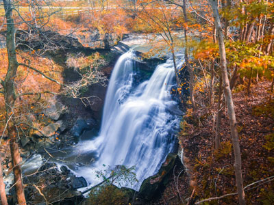
Erik Drost, CC BY 2.0, via Wikimedia Commons; Image Size Adjusted
Cuyahoga Valley National Park 1 Day Itinerary
★Ohio
Between Cleveland and Akron, Cuyahoga Valley blends waterfalls, forests, and canal and railroad history. This one-day north-to-south route links scenic overlooks, easy trails, and historic landmarks.
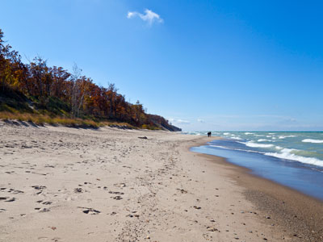
Diego Delso, CC BY-SA 3.0, via Wikimedia Commons; Image Size Adjusted
Indiana Dunes National Park 1 Day Itinerary
★Indiana
Indiana Dunes lines 15 miles of Lake Michigan shore with beaches, towering dunes, prairies, and wetlands. This one-day plan moves west to east, from the visitor center to sunset on Mount Baldy.
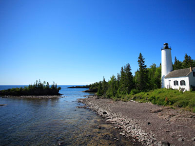
Ray Dumas, CC BY-SA 2.0, via Wikimedia Commons; Image Size Adjusted
Isle Royale National Park 1 Day Itinerary
★Michigan
Isle Royale is a roadless Lake Superior wilderness of lava ridges, boreal forest, and moose. This one-day plan explores Rock Harbor with a shoreline hike, Tobin Harbor, and a trip to the lighthouse.

Jeffkantor, CC BY-SA 4.0, via Wikimedia Commons; Image Size Adjusted
Voyageurs National Park 2 Day Itinerary
★Minnesota
Voyageurs is a water-based wilderness of lakes and forested islands on the Canadian border. This two-day plan explores Rainy Lake and Kabetogama Lake, with boat access to islands, trails, and falls.

Badlands National Park 1 Day Itinerary
★South Dakota
Striped buttes, pinnacles, and fossil beds make Badlands feel otherworldly. This one-day plan follows Badlands Loop Road east to west, with short hikes, overlooks, and a sunset over the prairie.

Sam valadi, CC BY 2.0, via Wikimedia Commons; Image Size Adjusted
Gateway Arch National Park 1 Day Itinerary
★Missouri
The 630-foot Gateway Arch is the nation's tallest monument and its smallest national park. This one-day plan covers the Arch, the museum, the Old Courthouse, and the riverfront, ending on Eads Bridge.
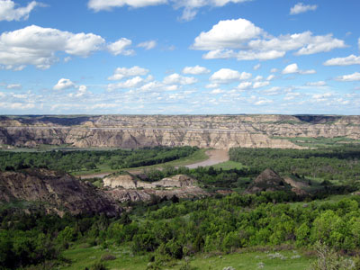
NPS/Mark Hoffman, Public domain, via Wikimedia Commons; Image Size Adjusted
Theodore Roosevelt National Park 2 Day Itinerary
★North Dakota
Theodore Roosevelt's rugged North Dakota badlands shaped the conservation movement. This two-day plan explores the South and North Units' canyons, bison herds, river valleys, and ranching history.
Wind Cave National Park 1 Day Itinerary
★South Dakota
Wind Cave holds most of the world's boxwork formations beneath one of America's great mixed-grass prairies. This one-day plan pairs a ranger-led cave tour with easy hikes and wildlife viewing.
Arches National Park 2 Day Itinerary
★Utah
Arches holds the world's greatest concentration of natural stone arches. Day one covers Delicate Arch, Balanced Rock, and The Windows; day two heads north to Devils Garden and Klondike Bluffs.

Black Canyon Of The Gunnison National Park 2 Day Itinerary
★Colorado
The Gunnison River has carved one of North America's steepest, narrowest canyons. This two-day plan explores the developed South Rim and the quieter North Rim, with overlooks, trails, and historic routes.

Bryce Canyon National Park 1 Day Itinerary
★Utah
Bryce Canyon's amphitheaters hold thousands of colorful hoodoos. This one-day plan combines the best rim viewpoints, a signature hike below the rim, and a scenic drive to the southern overlooks.
Canyonlands National Park 3 Day Itinerary
★Utah
Canyonlands spans vast mesas and canyons carved by the Colorado and Green Rivers. This three-day plan covers Island in the Sky, The Needles, and backcountry corridors, with viewpoints, ruins, and hikes.

James St. John, CC BY 2.0, via Wikimedia Commons; Image Size Adjusted
Capitol Reef National Park 2 Day Itinerary
★Utah
Capitol Reef protects cliffs, canyons, and historic orchards along the Waterpocket Fold. Day one covers the scenic drive and Fruita; day two heads to remote Cathedral Valley and the backcountry.

Daniel Mayer, CC BY-SA 3.0, via Wikimedia Commons; Image Size Adjusted
Carlsbad Caverns National Park 1 Day Itinerary
★New Mexico
Carlsbad Caverns offers a spectacular underground world beneath desert ridges. This one-day plan covers the Natural Entrance, Big Room, King's Palace, scenic overlooks, and the evening bat flight.
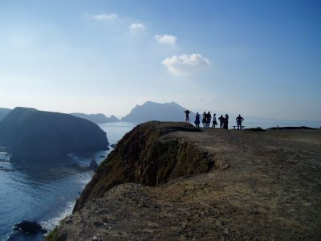
National Marine Sanctuaries, Public domain, via Wikimedia Commons; Image Size Adjusted
Channel Islands National Park 1 Day Itinerary
★California
The Channel Islands are called the Galápagos of North America. This one-day plan explores East Anacapa, with sea cliffs, natural arches, seabird and sea lion colonies, and a short loop trail.

Death Valley National Park 3 Day Itinerary
★California
Death Valley holds North America's lowest point, salt flats, volcanic hills, and sand dunes. This three-day plan groups Badwater Basin, Zabriskie Point, Artists Drive, and the dunes by geography.
Grand Canyon National Park 1 Day Itinerary
★Arizona
This one-day South Rim plan covers Mather and Yavapai Points, the historic village, and Hermit Road's overlooks, ending with sunset at Hopi Point. Hikes below the rim are saved for a longer stay.
Grand Canyon National Park 2 Day Itinerary
★Arizona
This two-day plan spends day one on the South Rim's viewpoints and village, then hikes the Bright Angel Trail to Plateau Point on day two for a close look at the canyon's true scale.
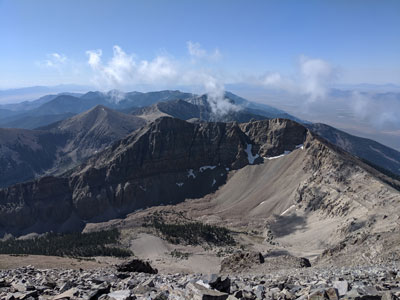
Derrellwilliams, CC BY-SA 4.0, via Wikimedia Commons; Image Size Adjusted
Great Basin National Park 2 Day Itinerary
★Nevada
Great Basin's alpine peaks rise abruptly from the desert. This two-day plan pairs Lehman Caves and Baker Creek with the high Wheeler Peak area, with its ancient bristlecone pines and alpine lakes.

mark byzewski, CC BY 2.0, via Wikimedia Commons; Image Size Adjusted
Great Sand Dunes National Park 1 Day Itinerary
★Colorado
Great Sand Dunes protects North America's tallest dunes beneath the Sangre de Cristo Mountains. This one-day plan combines nature trails, seasonal creek play, and a trek onto the massive dunes.

.jpg){kind=link}


.jpg){kind=link}


.jpg){kind=link}


.jpg){kind=link}


.jpg){kind=link}


.jpg){kind=link}
Haleakala National Park 2 Day Itinerary
★Hawaii
Haleakalā links a vast summit crater with a lush rainforest coast. This two-day plan explores both districts, with sunrise-worthy views, volcanic hikes, native plants, and eastern Maui waterfalls.

English: NPS Photo, Public domain, via Wikimedia Commons; Image Size Adjusted
.JPG){kind=link}
Hawaii Volcanoes National Park 2 Day Itinerary
★Hawaii
Hawaiʻi Volcanoes reveals planetary creation through active volcanoes, calderas, lava deserts, and rainforest. This two-day plan covers scenic drives, volcanic landscapes, cultural sites, and hikes.
-400.jpg)
inkknife_2000 (7.5 million views +), CC BY-SA 2.0, via Wikimedia Commons; Image Size Adjusted
.jpg){kind=link}
Joshua Tree National Park 3 Day Itinerary
★California
Joshua Tree is where two deserts meet, with twisting Joshua trees, granite monoliths, and palm oases. This three-day plan focuses on its best viewpoints, hidden valleys, and historic ruins.

RuggyBearLA, CC BY 2.0, via Wikimedia Commons; Image Size Adjusted

Kings Canyon National Park 2 Day Itinerary
★California
Kings Canyon is one of North America's deepest canyons. This two-day plan spends day one among the giant sequoias of Grant Grove and day two in Cedar Grove's granite cliffs, meadows, and waterfalls.
Lassen Volcanic National Park 2 Day Itinerary
★California
Lassen Volcanic combines steaming hydrothermal basins, volcanic peaks, clear lakes, and lava fields. This two-day plan links its most rewarding landmarks, lakes, and mountain views.

Ken Lund from Las Vegas, Nevada, USA, CC BY-SA 2.0, via Wikimedia Commons; Image Size Adjusted
.jpg){kind=link}
Mesa Verde National Park 2 Day Itinerary
★Colorado
Mesa Verde preserves hundreds of Ancestral Pueblo dwellings tucked into sandstone cliffs. This two-day plan explores Chapin Mesa and Wetherill Mesa, with cliff dwellings, mesa-top villages, and overlooks.
Petrified Forest National Park 1 Day Itinerary
★Arizona
Petrified Forest preserves colorful fossilized logs and the Painted Desert's badlands. This one-day plan follows the park road north to south, with petroglyphs, viewpoints, and short hikes.
Pinnacles National Park 1 Day Itinerary
★California
Pinnacles protects jagged volcanic spires, talus caves, and soaring cliffs. This one-day plan centers on the east entrance and the Bear Gulch, High Peaks, and Condor Gulch loop, with condor sightings.
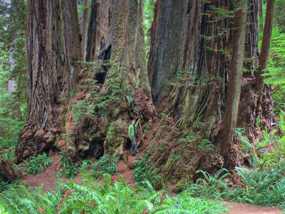
rachel_thecat, CC BY-SA 2.0, via Wikimedia Commons; Image Size Adjusted

Redwood National And State Parks 2 Day Itinerary
★California
Redwood National and State Parks protect the tallest trees on Earth. This two-day plan runs from Prairie Creek north to Jedediah Smith and Del Norte Coast, with groves, scenic drives, and coastline.

Rocky Mountain National Park 4 Day Itinerary
★Colorado
Rocky Mountain protects alpine tundra, snow-fed lakes, waterfalls, and peaks over 14,000 feet. This four-day plan groups Bear Lake, Trail Ridge Road, hikes, and wildlife viewing by region.
Saguaro National Park 2 Day Itinerary
★Arizona
Rocky Mountain protects alpine tundra, snow-fed lakes, waterfalls, and 14,000-foot peaks. This four-day plan groups Bear Lake, Trail Ridge Road, hikes, and wildlife viewing by region.
Sequoia National Park 2 Day Itinerary
★California
Sequoia protects the General Sherman Tree and the world's largest trees. This two-day plan covers the Giant Forest and its viewpoints, a granite summit hike, Crystal Cave, and the Generals Highway.

White Sands National Park 1 Day Itinerary
★New Mexico
White Sands protects the world's largest gypsum dune field, a glowing white sea beneath open desert skies. This one-day plan combines accessible highlights, desert wildlife, and backcountry dunes.

Yosemite Valley 3 Day Itinerary
★California
Yosemite Valley's thousand-foot granite cliffs and waterfalls inspired John Muir and Ansel Adams. This three-day plan blends iconic viewpoints, classic hikes, and quiet corners with minimal driving.
Yosemite Valley Glacier Point 4 Day Itinerary
★California
Spend four days in Yosemite Valley and at Glacier Point, where thousand-foot granite cliffs, waterfalls, and meadows meet sweeping overlooks. Iconic viewpoints, classic hikes, and quiet corners await.
Yosemite National Park 5 Day Itinerary
★California
Yosemite's cliffs, giant sequoias, alpine lakes, and waterfalls reward exploring beyond the valley. This five-day plan covers the Valley, Glacier Point, Mariposa Grove, Tioga Road, and Hetch Hetchy.

Zion National Park 3 Day Itinerary
★Utah
Zion's sandstone walls rise thousands of feet above the Virgin River. This three-day plan groups Zion Canyon, the East Rim, and Kolob Canyons by region, with the park's most rewarding, practical hikes.
Las Vegas And Grand Canyon National Park 5 Day Itinerary
★Nevada, Arizona
This five-day journey pairs the Las Vegas Strip with the Grand Canyon's South Rim. It covers Desert View Drive, Grand Canyon Village, and Hermit Road, keeping every stop along the rim.
Las Vegas And Utah 5 National Parks 7 Day Itinerary
★Nevada, Utah
This seven-day odyssey pairs the Las Vegas Strip with Utah's five national parks. It distills the most iconic arches, hoodoos, canyon rims, and slickrock stops into one road trip from Vegas.
Las Vegas Zion And Death Valley National Parks 5 Day Itinerary
★Nevada, Utah, California
This five-day journey pairs the Las Vegas Strip with Zion's towering red walls and Death Valley's sea-level salt flats, distilled to the most iconic stops in each desert landscape.
Sequoia And Kings Canyon National Parks 4 Day Itinerary
★California
Sequoia and Kings Canyon share giant trees, glacial canyons, alpine lakes, and Sierra peaks. This four-day plan runs from Giant Forest and Mineral King to Kings Canyon and Grant Grove.
Utah 5 National Parks 7 Day Itinerary
★Utah
This seven-day loop through Utah's five national parks, Arches, Canyonlands, Capitol Reef, Bryce Canyon, and Zion, follows the most iconic viewpoints and trails with minimal driving.
Utah 5 National Parks And Grand Canyon National Park 7 Day Itinerary
★Utah, Arizona
This seven-day journey spans Utah's five national parks and ends at the Grand Canyon, moving from Zion and Bryce Canyon through Capitol Reef and Arches to the South Rim.
Yosemite Sequoia And Kings Canyon National Parks 5 Day Itinerary
★California
This five-day High Sierra journey runs from Yosemite Valley's granite walls to Sequoia's giant trees and Kings Canyon's glacial depths, with long scenic mountain drives between parks.
Crater Lake National Park 1 Day Itinerary
★Oregon
Crater Lake, the nation's deepest lake at 1,943 feet, fills a collapsed volcano with intensely blue water. This one-day plan follows the 33-mile Rim Drive with top overlooks and short hikes.
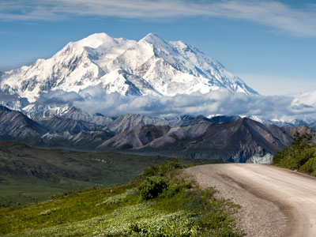
Denali National Park and Preserve, Public domain, via Wikimedia Commons; Image Size Adjusted
.jpg){kind=link}
Denali National Park 1 Day Itinerary
★Alaska
Denali's 20,310-foot peak towers over six million acres of tundra, taiga, and wildlife. This one-day plan pairs a narrated Denali Park Road bus tour with the park's sled dogs and an evening walk.

Weiler Greg, U.S. Fish and Wildlife Service, Public domain, via Wikimedia Commons; Image Size Adjusted

Gates of the Arctic National Park 1 Day Itinerary
★Alaska
Gates of the Arctic is a roadless Brooks Range wilderness north of the Arctic Circle. This one-day fly-in from Fairbanks crosses the Arctic Circle, visits Coldfoot, and flies over the park's peaks.
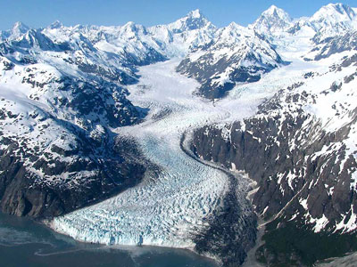
National Park Service, Alaska Region, Public domain, via Wikimedia Commons; Image Size Adjusted
.jpg){kind=link}
Glacier Bay National Park 2 Day Itinerary
★Alaska
Glacier Bay's tidewater glaciers, rainforest, and wild coast showcase glacial change. This two-day plan explores Bartlett Cove's trails and Tlingit heritage, then takes the day boat to Margerie Glacier.
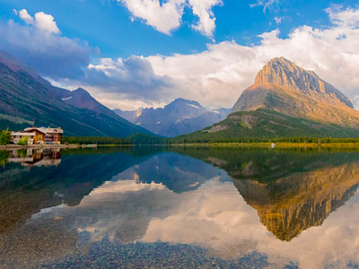
Viveksk1, CC BY-SA 4.0, via Wikimedia Commons; Image Size Adjusted

Glacier National Park 5 Day Itinerary
★Montana
Glacier, the Crown of the Continent, protects lakes, active glaciers, and alpine meadows. This five-day plan covers Going-to-the-Sun Road, Many Glacier, the North Fork, and Two Medicine by region.

Jon Sullivan, PD Photo., Public domain, via Wikimedia Commons; Image Size Adjusted

Grand Teton National Park 3 Day Itinerary
★Wyoming
Grand Teton's granite peaks rise above lakes, rivers, and sagebrush valleys. This three-day plan covers valley viewpoints, historic sites, the Jenny Lake region, and Cascade Canyon's alpine lakes.
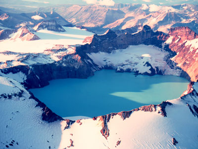
Captain Budd Christman, NOAA Corps, Public domain, via Wikimedia Commons; Image Size Adjusted

Katmai National Park 2 Day Itinerary
★Alaska
Katmai is famed for Brooks Falls bears and the volcanic Valley of Ten Thousand Smokes. This two-day plan centers on Brooks Camp, pairing a day of bear watching with a bus tour into the valley.
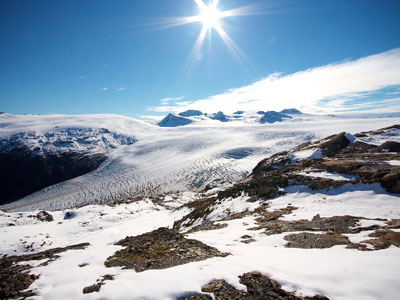
Sujohn Das from Seattle, USA, CC BY-SA 2.0, via Wikimedia Commons; Image Size Adjusted

Kenai Fjords National Park 2 Day Itinerary
★Alaska
Kenai Fjords is a world of ice, rock, and sea, with Harding Icefield glaciers flowing toward the coast. This two-day plan combines the Seward Highway, Exit Glacier, and a full-day fjord cruise.
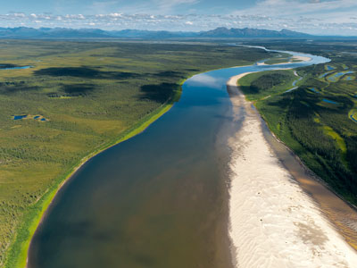
National Park Service, Alaska Region, Public domain, via Wikimedia Commons; Image Size Adjusted
.jpg){kind=link}
Kobuk Valley National Park 1 Day Itinerary
★Alaska
Kobuk Valley holds the Arctic's largest active sand dunes and a vast caribou migration. This one-day fly-in from Kotzebue visits a heritage center and lands near the Great Kobuk Sand Dunes.

James JonesResearch GeologistUSGS, Alaska Science Centerjvjones@usgs.gov, Public domain, via Wikimedia Commons; Image Size Adjusted
.jpg){kind=link}
Lake Clark National Park 2 Day Itinerary
★Alaska
Lake Clark pairs jagged peaks, glaciers, turquoise lakes, and active volcanoes, just 100 miles from Anchorage. This two-day plan flies to Port Alsworth, Dick Proenneke's cabin, and the coast's bears.

Mount Rainier National ParkS, CC BY 2.0, via Wikimedia Commons; Image Size Adjusted

Mount Rainier National Park 3 Day Itinerary
★Washington
Mount Rainier's 14,410-foot summit towers over glaciers, meadows, and old-growth forest. This three-day plan covers Paradise, Sunrise, and the quiet northwest around Mowich Lake and Carbon Glacier.
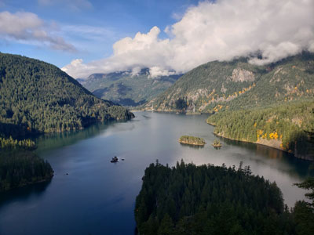
Jeff P from Berkeley, CA, USA, CC BY 2.0, via Wikimedia Commons; Image Size Adjusted
.jpg){kind=link}
North Cascades National Park 2 Day Itinerary
★Washington
Called the American Alps, North Cascades offers jagged peaks, abundant glaciers, turquoise lakes, and cedar forests. This two-day plan follows the highway to remote lakes and passes.
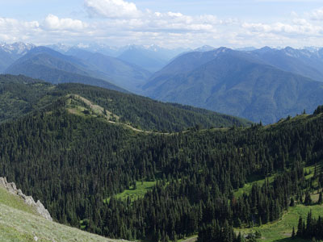
Dllu, CC BY-SA 4.0, via Wikimedia Commons; Cropped and; Image Size Adjusted

Olympic National Park 2 Day Itinerary
★Washington
Olympic protects glacier-capped mountains, temperate rain forests, and wild Pacific coast. Day one covers the northern mountains and forests; day two the rain forests, beaches, and western valleys.
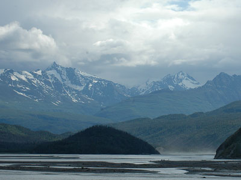
William L. Farr, CC BY-SA 4.0, via Wikimedia Commons; Image Size Adjusted
.jpg){kind=link}
Wrangell-St. Elias National Park 3 Day Itinerary
★Alaska
Wrangell-St. Elias is America's largest national park, with nine of the 16 highest US peaks. This three-day plan follows the McCarthy Road to Kennecott's historic mill town and the Root Glacier.

Dietmar Rabich, CC BY-SA 4.0, via Wikimedia Commons; Image Size Adjusted
,_Old_Faithful_Geyser_--_2022_--_2592.jpg){kind=link}
Yellowstone National Park 4 Day Itinerary
★Wyoming
Yellowstone's geysers, hot springs, waterfalls, and wildlife valleys are best explored by region. This four-day plan follows the Grand Loop Road, from Old Faithful to the Grand Canyon of the Yellowstone.
Denali National Park and Preserve, Public domain, via Wikimedia Commons; Image Size Adjusted
Anchorage Denali Kenai Fjords 5 Day Itinerary
★Alaska
This five-day Alaska loop runs from Anchorage north to Denali's tundra and grizzly country, then south along Turnagain Arm to Kenai Fjords, where tidewater glaciers calve into the sea.
Mount Rainier National ParkS, CC BY 2.0, via Wikimedia Commons; Image Size Adjusted
Seattle And Washingtons National Parks 7 Day Itinerary
★Washington
This seven-day journey blends Seattle's culture with Mount Rainier's glaciers, North Cascades wilderness, and Olympic's rain forests and Pacific coast, on a route planned to minimize driving.
Dietmar Rabich, CC BY-SA 4.0, via Wikimedia Commons; Image Size Adjusted
Yellowstone And Grand Teton National Parks 5 Day Itinerary
★Wyoming
This five-day adventure combines Yellowstone's geysers, hot springs, and waterfalls with Grand Teton's granite peaks and alpine lakes, with a route that keeps driving to a minimum.
American Samoa 3 Day Itinerary
★American Samoa
American Samoa's volcanic islands mix rainforest, coral reef, and fa'a Samoa tradition. This three-day plan explores Tutuila and the national park, then flies to the remote Manu'a Islands.
Virgin Islands National Park 2 Day Itinerary
★U.S. Virgin Islands
Virgin Islands National Park protects coral reefs, beaches, and tropical forest on St. John. This two-day plan explores the park's trails, beaches, and snorkeling, with a day trip to nearby cays.
Overview
The United States has 63 national parks, spread across 30 states and two U.S. territories. Yellowstone became the first national park in 1872, and the National Park Service was created in 1916 to manage the growing system. The newest park, New River Gorge in West Virginia, was redesignated as a national park in 2020.
The parks range dramatically in size and character. Wrangell-St. Elias in Alaska is the largest at more than 13 million acres, while Gateway Arch in St. Louis is the smallest. California has the most national parks with nine, followed by Alaska with eight and Utah with five. Great Smoky Mountains, on the border of Tennessee and North Carolina, is the most visited national park in the country.
Grouping parks by region makes it easier to plan a trip. Utah's Mighty Five (Arches, Canyonlands, Capitol Reef, Bryce Canyon, and Zion) can be linked into a single road trip, as can Yellowstone and Grand Teton in Wyoming, or Sequoia, Kings Canyon, and Yosemite in California. Remote parks such as Gates of the Arctic, Kobuk Valley, Dry Tortugas, and Isle Royale are reached only by plane or boat and take more advance planning.
Before you go, consider the America the Beautiful annual pass, which covers entrance fees at all national parks. Some popular parks require timed-entry or vehicle reservations during peak season, so check the National Park Service website for current conditions, closures, and reservation requirements before your visit.